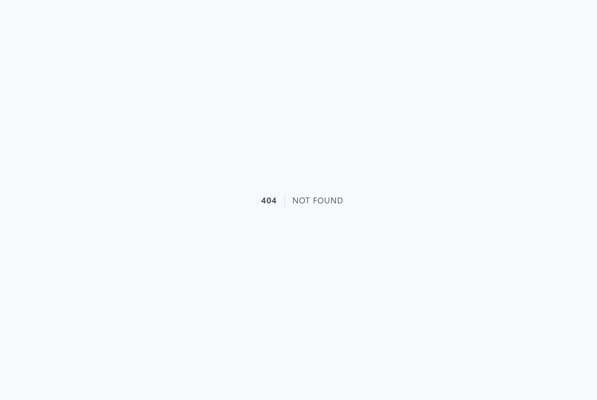

Τρεις οθόνες, μία βάση. Ό,τι αλλάζετε στη μία φαίνεται αμέσως στις άλλες δύο,
και καμία θέση δεν πουλιέται δύο φορές.
Οι τρεις οθόνες
Το Kaiki δεν είναι ένα πρόγραμμα αλλά τρία πρόσωπα του ίδιου πράγματος: αυτό που
βλέπετε εσείς, αυτό που βλέπει ο επισκέπτης, και η φόρμα κράτησης που μπορεί να
μπει και σε δικό σας site. Και τα τρία διαβάζουν και γράφουν στα ίδια δεδομένα.
Ο πίνακας — η δική σας οθόνη
Εκεί δουλεύετε. Είναι στη διεύθυνση /app και θέλει κωδικό. Έχει τον
κατάλογό σας (σκάφη, λιμάνια, εκδρομές, τιμές), τις αναχωρήσεις και τις κρατήσεις,
την επιβίβαση, τα χρήματα και τις ρυθμίσεις.
Ο πίνακας ελέγχου. Έξι νούμερα που απαντούν στην ερώτηση «τι πρέπει να
κοιτάξω σήμερα», και από κάτω η λωρίδα με το πού βρίσκεται κάθε σκάφος αυτή τη
στιγμή. Κάθε νούμερο είναι σύνδεσμος προς τη λίστα που το παράγει.
Η σελίδα σας — η οθόνη του επισκέπτη
Το Kaiki φτιάχνει και συντηρεί μια δημόσια σελίδα για εσάς: αρχική, σελίδα ανά
εκδρομή, αναζήτηση, συχνές ερωτήσεις και νομικές σελίδες. Δεν χρειάζεται να έχετε
δικό σας site. Αν έχετε, μπορείτε να βάλετε το δικό σας domain μπροστά της.

Η αρχική σελίδα του διοργανωτή. Τα χρώματα, το λογότυπο, τα κείμενα και
η σειρά των ενοτήτων ρυθμίζονται από τον πίνακα, χωρίς να χρειάζεται κανείς να
αγγίξει κώδικα.
Η φόρμα κράτησης — η οθόνη που ταξιδεύει
Είναι η φόρμα με την οποία κλείνει ο επισκέπτης: διαλέγει ημερομηνία, διαλέγει
πόσα άτομα, πληρώνει. Ζει μέσα στη σελίδα της εκδρομής, αλλά είναι φτιαγμένη ώστε
να μπαίνει και σε ξένη σελίδα — στο WordPress σας ή σε οποιοδήποτε site — με λίγες
γραμμές. Σε όποια σελίδα κι αν βρίσκεται, μιλάει στα ίδια δεδομένα και δεσμεύει τις
ίδιες θέσεις.
Πώς φτάνει μια κράτηση από τον επισκέπτη στο σκάφος
Αξίζει να το διαβάσετε μία φορά ολόκληρο. Τα υπόλοιπα κεφάλαια περιγράφουν οθόνες·
αυτό περιγράφει τη διαδρομή που τις συνδέει.
Ο επισκέπτης διαλέγει ημέρα. Βλέπει μόνο ημερομηνίες που έχουν
πραγματικά ελεύθερες θέσεις — υπολογισμένες από τη χωρητικότητα του σκάφους,
τις υπάρχουσες κρατήσεις, τον χρόνο προετοιμασίας ανάμεσα σε δύο εκδρομές και
τυχόν δεσμεύσεις που έχετε βάλει εσείς.
Διαλέγει άτομα και βλέπει τιμή. Η τιμή βγαίνει από τον
τιμοκατάλογο που ισχύει για εκείνη την ημερομηνία, με τις ηλικιακές κατηγορίες
που έχετε ορίσει. Στην τιμή περιλαμβάνεται ΦΠΑ.
Οι θέσεις δεσμεύονται προσωρινά. Μόλις προχωρήσει στην πληρωμή,
οι θέσεις κρατιούνται για λίγα λεπτά ώστε να μην τις πάρει άλλος όσο πληρώνει.
Αν δεν ολοκληρώσει, ελευθερώνονται μόνες τους.
Πληρώνει. Ολόκληρο το ποσό ή προκαταβολή, ανάλογα με το τι
έχετε ορίσει για τη συγκεκριμένη εκδρομή.
Η κράτηση επιβεβαιώνεται. Ο επισκέπτης παίρνει email με τον
κωδικό κράτησης και ένα εισιτήριο — με QR, αν επιβιβάζετε με σάρωση. Εσείς τη βλέπετε στις
Κρατήσεις και ο μετρητής της αναχώρησης ανεβαίνει.
Συμπληρώνει τα στοιχεία των επιβατών. Ονόματα και — όπου
χρειάζεται — αριθμοί εγγράφων, μέσα από δικό του σύνδεσμο. Μέχρι να τα
συμπληρώσει, η κράτηση εμφανίζεται στον πίνακα ως εκκρεμής.
Την ημέρα της εκδρομής, το πλήρωμα επιβιβάζει. Στην προβλήτα,
από κινητό, με σήμα ή χωρίς — σαρώνοντας το QR του εισιτηρίου ή πατώντας δίπλα
στο όνομα. Η κατάσταση επιβατών για το λιμεναρχείο βγαίνει με ένα κουμπί.
Αν χαλάσει ο καιρός
Η ακύρωση αναχώρησης λόγω καιρού είναι μία ενέργεια, όχι δέκα τηλεφωνήματα:
βλέπετε πρώτα ποιος παίρνει τι πίσω, και μετά το στέλνετε. Περιγράφεται
αναλυτικά στο Μέρος Γ.